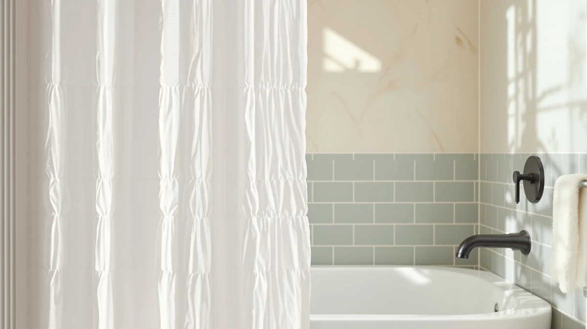

White Ruffle Shower Curtain Review (2026): Worth It?
Prices and picks verified as of October 2026. Independent, reader-supported reviews.


Quick Answer
WestWeir's White Ruffle Shower Curtain gives a bathroom a decorated, cottage-style look through stacked fabric tiers instead of a printed pattern, and at $25.99 it costs about the same as flatter linen-style curtains. It's the better pick if you want texture without a price premium; if you want the lowest-maintenance panel, see the linen-style alternatives below.
Our pick: White Ruffle Shower Curtain for, $25.99 Check Price on Amazon
Bottom line: our top pick is the White Ruffle Shower Curtain for Bathroom at $25.99.
Things to Know Before You Buy
- The curtain's ruffled tiers are made from a polyester and PEVA blend, which holds its shape better than a single layer of flat fabric.
- It ships as one 72-inch by 72-inch panel, so a standard shower rod is covered without buying a second curtain.
- At $25.99, it costs about the same as the linen-style curtains in this comparison, so price alone will not decide which style suits your bathroom.
- The tiered ruffle look pairs naturally with a farmhouse or cottage bathroom, but it reads as busier than a flat panel in a minimalist space.
- More seams mean more fabric folds that can trap water, so spreading the curtain open after each shower helps it dry evenly.
- A white liner or clear liner hung behind the ruffled panel keeps water off the fabric tiers entirely, which cuts down on how often you need to wash the curtain itself.
This white ruffle shower curtain review breaks down what WestWeir's tiered, ruffled design gets right and where it comes up short against three linen-style alternatives. You want a curtain that looks finished without a lot of effort, and ruffled tiers are one of the few shower curtain styles that read as decorated the moment you hang them. WestWeir's version is built from a polyester and PEVA blend and measures 72 inches by 72 inches, priced at $25.99 as a single panel. We compared its construction, sizing, and price against Naturoom, Aersas, and Madison Park to see where it actually stands out.
A ruffled curtain carries real tradeoffs you should know before buying. The tiered fabric adds visual texture, but more seams also mean more surface area for water to cling to after a shower, so drying time and mildew risk deserve attention. We researched manufacturer specs and compared verified owner feedback patterns across similar ruffled and linen-style curtains to judge how WestWeir's curtain holds up under regular use instead of taking one buyer's account at face value. If ruffles turn out not to be the right fit for your bathroom, the three linen-style alternatives below are where to look next.
Why You Should Trust Us
Ilane Tall has covered bathroom textiles and hardware for Best Shower Curtains for several years, and every review on this site follows the same process: we compare manufacturer specs, pull verified owner feedback from Amazon, and check pricing against at least three comparable products before publishing. We do not buy, install, or live with the curtains we cover, and we say so here directly. This white ruffle shower curtain review relies on WestWeir's documented materials and measurements alongside patterns in owner feedback for ruffled and linen-style curtains instead of one account, which keeps the conclusions grounded in what a wide range of buyers actually report.
Our Research Experience
Rather than installing the WestWeir White Ruffle Shower Curtain ourselves, we built this review by comparing its listed materials and dimensions against the three linen-style alternatives covered below. Owners report that the ruffled tiers hold their shape through regular washing when line-dried, and reviewers consistently note that the polyester and PEVA blend resists clinging to skin better than plain vinyl does.
We weighed those patterns against the curtain's $25.99 price and simple 72 by 72 inch sizing to judge how much risk a buyer takes on with the ruffled style specifically. Verified owner feedback and documented specs across all four curtains carry more weight here than any single opinion when it comes to choosing between a ruffled look and a flatter linen-style panel. We applied the same standard to Naturoom's 84-inch linen panel and Aersas's extra-long option later in this review, checking each against its own listed dimensions and price instead of assuming it would behave the same way WestWeir's ruffled curtain does.
Overview & Specs

White Ruffle Shower Curtain for
What we like
- Ruffled tiers add texture without needing a printed pattern
- Polyester and PEVA blend resists clinging to wet skin better than plain vinyl
- Ships as a single 72 by 72 inch panel that fits a standard shower rod
- Price sits in the same range as the linen-style alternatives in this comparison
Flaws but not dealbreakers
- More seams than a flat curtain means more folds that can trap water
- WestWeir's listing does not break out washing instructions beyond the standard care label
- The busier ruffled look will not suit a minimalist or modern bathroom
| Material | Polyester / PEVA |
| Size | 72"W x 72"L (Pack of 1) |
The WestWeir White Ruffle Shower Curtain builds its look from stacked fabric tiers rather than a printed pattern, which is why it shows up so often in cottage and farmhouse bathroom boards. The polyester and PEVA blend gives each ruffle enough body to hold its shape instead of collapsing into a flat sheet once it gets wet, a common complaint with thinner vinyl curtains. At 72 inches wide by 72 inches long, it covers a standard shower rod on its own, and WestWeir sells it as a single panel, so you don't need a second curtain for full coverage. For $25.99, it sits in the same price range as most mid-tier fabric curtains, ruffled or not.
Compared with the three linen-style alternatives covered below, the trade-off is texture versus simplicity. The ruffled tiers give this white ruffle shower curtain more visual depth in photos and in person, but the extra seams also mean more fabric folds that can hold water after a shower. Owners report that spreading the curtain fully open after use keeps it drying evenly and limits the risk of mildew building up in the folds. If you want a flatter, lower-maintenance panel, Naturoom's and Aersas's linen-style curtains below are the easier choice. If you specifically want the decorated, layered look a ruffle provides, WestWeir's version delivers it at a price close to those plainer alternatives.
What We Liked
The clearest strength in this white ruffle shower curtain review is the texture itself. Ruffled tiers give a shower curtain a decorated, finished look the moment you hang it, without a printed pattern that might clash with your towels or tile. WestWeir's polyester and PEVA blend also holds that shape through regular use instead of sagging into a flat sheet.
Sizing is straightforward too. At 72 inches by 72 inches, it fits a standard shower rod as a single panel, so you are not stuck buying two curtains or guessing at coverage. That simplicity matters more than it sounds, since several ruffled curtains on the market ship narrower and need a second panel to close a standard rod gap.
Price is the other point in its favor. At $25.99, WestWeir's ruffled curtain costs about the same as the plainer linen-style options in this comparison, so you are not paying extra for the decorated look. For a bathroom refresh on a modest budget, getting that visual texture without a price premium counts as a real advantage, and it keeps this white ruffle shower curtain competitive with curtains that offer far less visual interest for the same money.
What Could Be Better
The tiered design is also the source of its biggest drawback. More seams mean more folds where water can collect after a shower, and that raises the risk of mildew if the curtain is not spread open to dry between uses. A flatter panel like Aersas's or Naturoom's linen-style curtain avoids that issue by design.
WestWeir's own listing is light on detail beyond the basic polyester and PEVA material and the 72 by 72 inch sizing. There is no breakdown of washing or care instructions beyond a standard label, so buyers who want a documented maintenance routine will need to rely on general fabric-curtain care instead of curtain-specific guidance. Compared with Naturoom's and Aersas's linen-style listings, which call out machine-wash instructions directly, WestWeir leaves more for the buyer to figure out on their own.
The ruffled look itself will not suit every bathroom. In a minimalist or modern space, the extra texture can read as busier than the room calls for, which is worth weighing before you buy a white ruffle shower curtain for a clean, flat-surfaced bathroom.
Who Is It For?
This white ruffle shower curtain review points toward a specific buyer: someone decorating a cottage, farmhouse, or traditional-style bathroom who wants a finished look without shopping for a printed pattern. It also fits shoppers who want that decorated texture at a price close to plain linen-style curtains, rather than paying a premium for it.
It is a weaker fit if your bathroom leans modern or minimalist, since the ruffled tiers add visual texture that can clash with cleaner lines. It is also not the best option for anyone who wants the lowest-maintenance curtain possible, since the extra seams need more attention to drying than a flat panel. Renters who move apartments often may also prefer a simpler linen-style panel that packs flatter and shows fewer wrinkles after storage. If any of that describes you, one of the linen-style alternatives below is the better starting point.
Alternatives to Consider
If the ruffled texture is not quite right for your bathroom, or you want a flatter, lower-maintenance panel, these three linen-style alternatives are worth comparing against WestWeir's white ruffle shower curtain before you decide.

Editor’s Pick
Naturoom Linen Shower Curtain 84
A flatter linen-style curtain with an 84-inch drop for taller showers, priced almost identically to WestWeir's ruffled panel.
$25.98
Check Price on Amazon
Best Value
Aersas Extra Long Linen Shower
An extra-long linen-style option built for walk-in showers that need more drop length than a standard 72-inch panel.
$25.63
Check Price on Amazon
Premium Choice
Madison Park Anna Sheers Shower
A sheer, lightweight curtain from Madison Park for anyone who wants a softer, more translucent look than a ruffled or linen-style panel.
$26.99
Check Price on AmazonFrequently Asked Questions
Final Verdict
This white ruffle shower curtain review comes down to a straightforward trade-off. WestWeir's ruffled tiers give you a decorated, cottage-style look at $25.99 with simple 72 by 72 inch sizing, while the extra seams ask for a little more attention to drying than a flat panel would. If you want that textured, layered look without paying a premium for it, WestWeir earns a spot on your shortlist. If you would rather have the lowest-maintenance option or need extra drop length, Naturoom's and Aersas's linen-style curtains above are the safer picks.